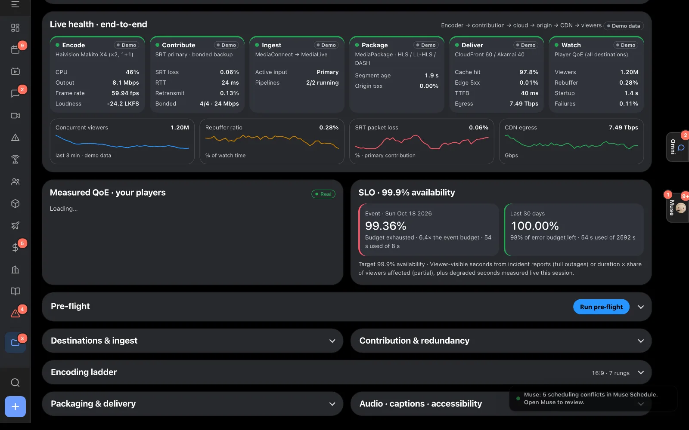
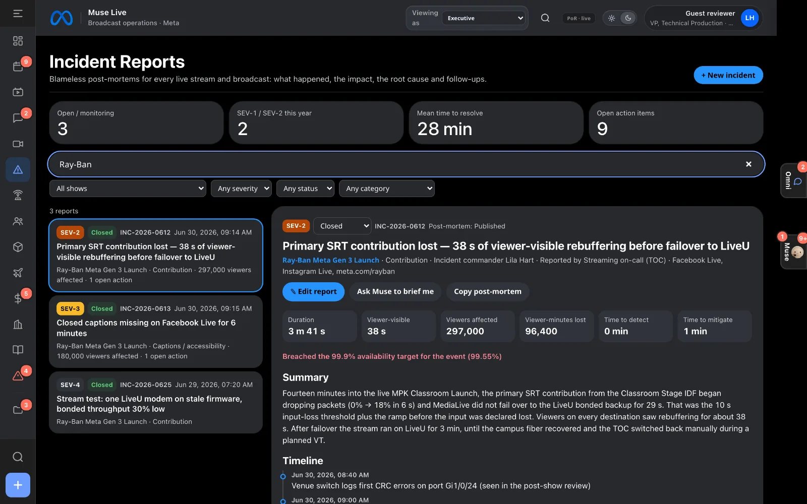
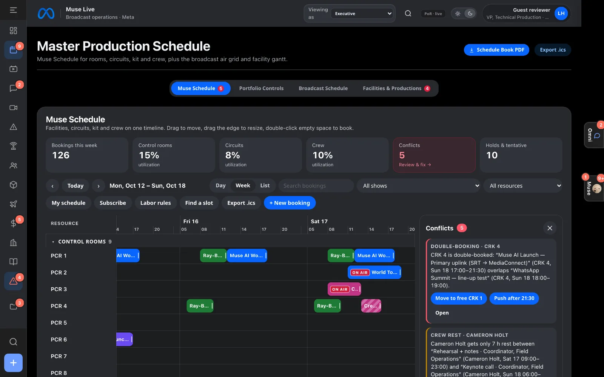

How it’s built
One place to plan, stream and learn from every live event
Muse Live is an operations platform for live events that are both broadcast and streamed: the plan of record for every show, end-to-end stream health from encoder to viewer, blameless incident reports, a resource scheduler, and Muse, an AI agent that can read all of it and propose changes for a human to confirm.
Who built it
Carlos Hurtado
Designed and built Muse Live: product, front end, edge functions, the Muse agent, tests and deployment.
What you’ll see
Every screen runs on the same live data, and Muse can answer questions about any of it.



The job, and where it lives in the app
What a streaming and broadcast engineer owns on a live event, mapped to the part of Muse Live that supports it.
| Responsibility | In Muse Live |
|---|---|
| Deliver live events end to end | Per-show streaming plan: destinations and ingest, contribution and redundancy (SRT primary, bonded cellular backup), packaging (HLS / LL-HLS / DASH), CDN, captions and loudness, pre-flight and go-live checklist. |
| Encoding and ABR ladders | Encoding ladder per show, with rungs, codecs and bitrates on the plan of record. |
| Monitoring and quality of experience | Live Streams wall; per-hop health; hls.js monitors that post real QoE beacons (startup, rebuffer, bitrate switches, errors); adapters for AWS MediaLive / MediaConnect / CloudFront metrics and Mux Data; an availability SLO with error budget. |
| Incident response and post-mortems | Incident Reports: severity, viewer impact, time to detect and mitigate, timeline, root cause and action items, searchable and linked to each show. |
| Event production and broadcast planning | Productions with department readiness, techbook PDF export, site surveys, venue drawings, power and fiber, gear and crew. |
| Resources: encoders, circuits, rooms, crew | Muse Schedule with conflict detection, labor rules, crew self-service and ICS calendar feeds. |
| Budget and vendors | Finance: budget against actuals, purchase orders, invoices and vendor payments per show. |
| Communication | Omni: every email, Teams chat and TOC alert linked to the show, purchase order or incident it is about. |
| Platforms: Facebook and Instagram Live | A server-side Graph API proxy for live video status and ingest stream health (token never reaches the browser). |
| Automation and tooling | Muse, an agent with tools over all of the above; write actions always go through a human confirmation step. |
Architecture
A static single-page app at the edge, a thin server layer for anything secret, and an agent loop where the model plans and the browser runs the tools.
On your face: the Meta Ray-Ban Display companion
The producer's view on Meta glasses — tally, alerts, and show status, live from the same backend as the dashboard.
- The desktop publishes a live status every 10 seconds: every show's state and health, open incidents, and what's next on air — or "unknown", never an invented next item.
- The glasses app (
/glasses/, built on@wearables-ui-toolkit/mrbd) renders that status with the same sign-in as the main app. - Publishing runs on a background cadence, so switching browser tabs never silently turns the glasses into a demo. If the status goes stale for over 60 seconds, the glasses label it "Demo data" instead of passing old numbers off as live.
How Muse answers a question
The model never sees the database and never writes on its own.
- The browser builds a live snapshot: every show’s readiness, dates, stream health and open incidents.
POST /api/museaiadds the persona and tool schemas and makes one call to Meta Model API, so the key never leaves the server.- If the model asks for tools (production, techbook, crew, schedule, streaming, incidents, weather…), the browser runs them against the plan of record and posts the results back. This repeats for up to 8 steps.
- Anything that would change data comes back as a Confirm card. A person decides, and Undo is offered.
How Meta AI was used
Three models, three distinct jobs — and a deterministic fallback that is never a silent substitute.
- Muse Spark 1.3 — the Muse drawer: reasoning and tool calls over the live production snapshot (
POST /api/museai). Every write returns as a Confirm card; the model never writes on its own. - SAM 3.1 — Stream Check frame segmentation (lower-third
caption barconcept). Black frames are caught by pixel math, and any check that errors reports unavailable, never clean. - Muse Voice Transcribe 1.0 — chunked live captions, started manually only (playback never auto-starts billing), with a searchable transcript and SRT/VTT export. Failure shows “captions unavailable”, never invented lines.
- Show Caller itself is deterministic rules, not a model call: it reads schedule, streams, incidents, crew, and equipment into a ranked brief with the source record behind every line, proposes a fix, and executes only after human approval re-verifies the world.
- No image-generation model is called anywhere in this codebase; AI-generated survey photos are labelled illustrative in the app. If the Meta Model API is unreachable, built-in rules answer instead — degraded, never silent.
How it’s checked
From the test and eval suites in the repository and an axe accessibility audit.
node --test tests/unit/*.test.mjs): auth, sessions, guest access and AI spend limits, KV, sync, incidents, SigV4, build — count reported by the runner at run timetests/e2e/a11y.spec.mjs)Decisions and trade-offs
Edge first, no servers to run
Static assets and Functions on Cloudflare Pages, state in Workers KV. Deploys in seconds, nothing to patch, and it is close to viewers everywhere.
Tools run in the browser
The plan of record lives client-side today, so the agent’s tools do too. The server only relays one model step at a time. As data moves into KV, tools can move server-side unchanged.
Simulated where it must be, real where it can be
Pipeline numbers are a seeded simulation, labeled “Demo”, until a stream is connected to CloudWatch, Mux or Facebook Live. Video monitors, QoE beacons and pre-flight checks are real.
Read-only by role, enforced on the server
Viewer sessions (including this guest demo) are refused by every write endpoint. Muse has separate rate limits and a daily token budget for guests.
Blameless by design
Incident reports focus on the system and the timeline, and every follow-up has an owner and a status, so the same failure can’t quietly happen twice.
Accessible from the start
Keyboard paths, focus management, screen-reader announcements and contrast checked in both themes.
Honest limits
- Viewer counts, bitrates and other pipeline metrics are simulated unless a show is connected to real telemetry. Every simulated number is labeled “Demo”.
- Stream monitors play public HLS sample streams, standing in for live program feeds.
- Most views are string-template JavaScript from an earlier build. Newer modules are self-contained, and
docs/MIGRATION.mdplans the move to React and TypeScript. - Shared storage is last-write-wins per key. That is fine for a small team; a real deployment needs per-record merges or a database.
- This is a concept demo, not an official Meta product.
Hackathon disclosure — before / during
What the commit history shows, dated. Muse Live itself predates the Meta Global AI Developer Hackathon window (Oct 27 – Nov 4, 2026).
- Before Oct 27, 2026: 32 commits are dated Oct 15–19, 2026. They include the Oct 15 rebrand (
fde343c, “Rebrand to Muse Live: remove all NBC/NBCUniversal/Pulse/Peacock/Telemundo references”) — the codebase began as an NBC “Pulse” operations tool before the Muse Live rebrand. - During the window: commits dated Oct 27, 2026 include the Show Caller / Stream Check work (
e5beea1,bd1b44e,c40872e,ff34f64). Every commit whose message says “Day” is dated Oct 27; “Day 1–7” in older notes names work packages, not separate calendar days. Further commits are dated Oct 31, 2026. - Commit dates alone do not prove when each line was first drafted. Owner to confirm (Q1): whether any “Day 1–6” work was written before Oct 27 — this page states only what
git logshows until the owner confirms the wording.
Privacy
- Google Analytics (
G-35PR2RKJ51) is consent-gated: analytics storage defaults to denied and the tag is skipped entirely onlocalhost/127.0.0.1. No analytics hit is sent until consent is granted. - First-party product telemetry (
js/muse-observe.js→/api/observe) runs only for signed-in sessions. It counts errors, views and Muse questions (never question text) into daily aggregates (KV, 120-day expiry); admins read them at/ops/health.html. - Audio for captions and frames for Stream Check are sent to the Meta Model API only when you use those features. See Third-party notices.